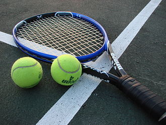

Tennis is a racket sport that can be played individually against a single opponent (singles) or between two teams of two players each (doubles). Each player uses a tennis racket that is strung with cord to strike a hollow rubber ball covered with felt over or around a net and into the opponent's court. The object of the game is to maneuver the ball in such a way that the opponent is not able to play a valid return. The player who is unable to return the ball will not gain a point, while the opposite player will.
Tennis is an Olympic sport and is played at all levels of society and at all ages. The sport can be played by anyone who can hold a racket, including wheelchair users. The modern game of tennis originated in Birmingham, England, in the late 19th century as lawn tennis.[1] It had close connections both to various field (lawn) games such as croquet and bowls as well as to the older racket sport today called real tennis. During most of the 19th century, in fact, the term tennis referred to real tennis, not lawn tennis.
The rules of modern tennis have changed little since the 1890s. Two exceptions are that from 1908 to 1961 the server had to keep one foot on the ground at all times, and the adoption of the tiebreak in the 1970s. A recent addition to professional tennis has been the adoption of electronic review technology coupled with a point-challenge system, which allows a player to contest the line call of a point, a system known as Hawk-Eye.
Tennis is played by millions of recreational players and is also a popular worldwide spectator sport. The four Grand Slam tournaments (also referred to as the Majors) are especially popular: the Australian Open played on hard courts, the French Open played on red clay courts, Wimbledon played on grass courts, and the US Open also played on hard courts.